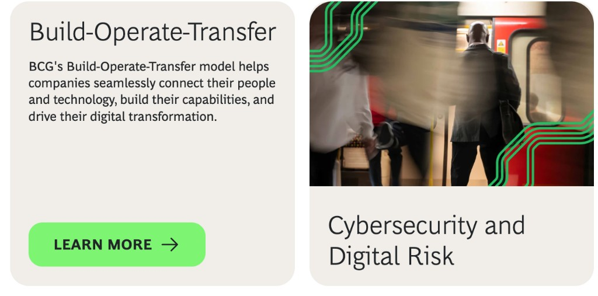

Embedded product and engineering
Ship predictably without rebuilding your leadership bench.
Senior product leadership, embedded with your team.
Weekly roadmap, PRDs, and a shipping rhythm.
Learn moreTalk to Mira — Chandan’s build-scoper. Voice or text. 60 seconds. No signup.
“Chandan scoped our re-architecture in one call.”
— Real Name, Role, Company
Embedded leadership, governed design systems, and high-risk AI workflow UX—for teams that need clarity without a bench behind the work.
Ship predictably without rebuilding your leadership bench.
Senior product leadership, embedded with your team.
Weekly roadmap, PRDs, and a shipping rhythm.
Learn moreYour product feels like one product, not ten.
Scattered features become one coherent product.
Audit, north star, and a 90-day cohesion plan.
Learn moreLet AI near the decisions you can't get wrong.
Human-in-the-loop AI where mistakes are expensive.
Decision map, guardrails, and one tested pilot.
Learn moreRobotic surgery operations, field technicians, and a contained India-scale consumer chapter—enterprise proof stays primary.
In regulated surgical operations UX, risk-aware modes replaced ambiguous handoffs with explicit next actions under clinical pressure.
Teams spent less time reconciling alerts and more time on accountable decisions when stakes were highest—without relaxing compliance rigor.
Learn more
For enterprise field service, AI stayed assistive—clear recommendations technicians could override without losing auditability.
Dispatch and field leads adopted it because in-job guidance matched how work actually breaks—not a demo-perfect happy path.
Learn more
From WhiteHat Jr through BYJU’s Future School: eight countries, research at volume, and adoption signals on tracked releases—programme-level credit, explicitly secondary to enterprise work.
Use this tile to prove multi-market judgment without letting consumer energy override regulated delivery narratives above the fold.
Learn moreSame play, every shop. Set the depth with the toggle.
Before you fix anything, find out what’s actually broken.
You’re fixing the loudest thing. The real problem is quieter. One founder rebuilt onboarding for three weeks — the churn was actually a billing email.
Pick one. Write what kills it. Move.
Stop A/B-testing your decisions. Pick the bet, write what would kill it, say it in one sentence. One founder chose Stripe this way — saved six months.
Bones before skin. Ugly is shippable. Pretty can wait.
Build the ugly working version first. One founder shipped checkout as a Stripe button on plain HTML — eleven paying customers before the designer started.
What actually changed. Not what you hoped would.
After shipping, look at what actually moved. One team’s checkout shipped: conversion +34%, support tickets +60%. Both are real. The miss teaches as much.
Your move
The four moves above describe how the work goes. If one of them fits a decision you’re carrying — a bet, a launch, or a receipt you can’t read clearly — let’s trace it together.
Best for teams navigating a real product, growth, or UX trade-off in the next 4-8 weeks. Expect a clear recommendation and practical next steps.